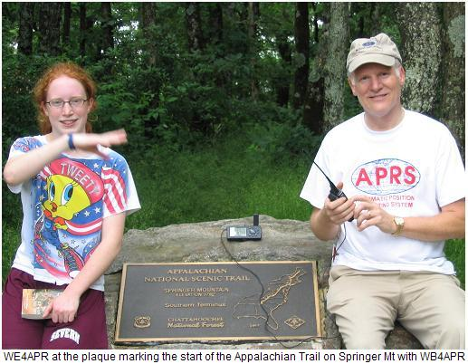
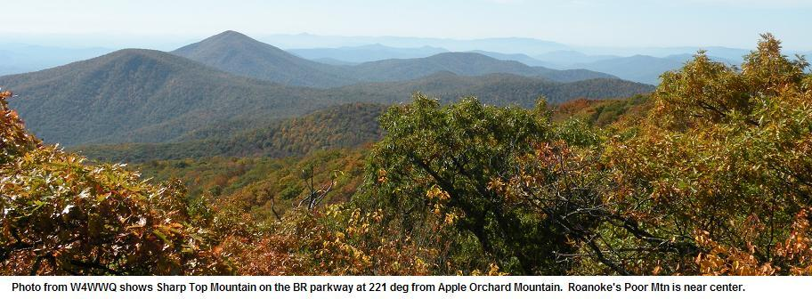

& Scouting's Operation On-Target
PCT Status for 2020 Due to little aactivity, the Yahoogroup email reflector expired at the end of 2019. Please join the overall GOlden Packet group (atgp) on groups.io to volunteer and to coordinate efforts. Thanks to Barry Thaysen for setting this up in 2011. Martin, KI6WJP prepared a PATH list in 2011 to help organize planning. See the 2011 path ideas.
Now Success yet out west... We tried to organize in 2011 and 2012 and to get more hams involved, we scheduled the Golden Packet Event to coincide with the National Scouting's Operation ON-Target. This Scout event involves dozens of mountains and troops throughout the western state's mountains. Rather than duplicating their detailed organization we simply ask all APRS hams wanting to participate to join up with any of these EXISTING expeditions to Operation ON-Target mountains and just make sure that an APRS radio goes along. The On-Target map at right shows the 2012 map. Go here to see the live interactive map of all present ON-Target Mountains and Teams. It is growing daily.
2012 - Joint APRS and Operation On-Target! We need to start planning the involvement of APRS GOlden Packet concepts with the western On-Target concepts. Much of this page is historical when we tried to organize the Pacific APRS links on their own. Use it for plannning the APRS Golden Packet portion of your adventure, but do all site planning and team coordination within the existing Operation ON-TARGET web pages and organizations. Then report here, how the Golden Packet portion worked out west this year.
2011 Summary: The 2011 APRS planning was ramping up quickly for an attempt on the PCT, but they just ran out of time at the last minute. Lets hope that joining up with Operation ON-Target in future years will help! Here was the 2011 map.
Objective: This page is dedicated to organizing an APRS Packet Message Golden Packet event along the West coast comparable to the one the Easties do on the Appalachian Trail. The Objective is to communicate with APRS Messaging from Border to Border or hundreds of miles by using strategically located portable digipeater sites. For this short 3 hour event, the 144.34 packet balloon channel will be used that will not see any interference from the normal APRS system. But since this is a primary ATV frequency in LA, we will have to use a different VHF freq around the SOCAL to keep the peace.
With the much higher mountains of California, this could be done with fewer hops than the 14 it takes in the Appalachians. The key to success is to make links ACROSS Valleys, to get the maximum height above average terrain. You can see in the map to the left how the RF path zig-zags with only occasional sites on the actual trail. There is no requirement to have the temporary stations anywhere near the trail, because as long as they are high up, they can be accessed from the trail. The goal of most sites is easy access so that the event can occur on Sunday without a lot of special effort by a lot of teams. Drive-up sites are ideal.
Golden Packet goal is DISTANCE: Look at the map above and look for end-to-end long chain possibliities. Then join up with those scout/ham teams and make sure they carry APRS and a digipeater on the special event frequency of 144.34 during the event. See the original Golden Packet web page for all APRS settings and operations. You do not want to saturate the channel with side-to-side dead-end links. So concentrate on long chain serial mountains. This drastically cuts down on the packet QRM. You only will hear 2 copies of each packet in a chain. But in a 2 dimensional side-to-side area, you would hear a huge multiplicaiton of dupes. Stations not on the major long chains can just operate normal APRS on the national channel and still be seen.
Why are we doing this? For the last 30 years, Packet Radio just ain't got no respect at the national Field Day events, so we have begun our own outdoors VHF packet radio field event! This page is focused on the Pacific Crest Trail shown here to the left. We need to get enough internet-junkies out of their shacks.
Here were the volunteers last year (2011):
This Golden Packet amateur radio communications event on the Pacific Coast states is designed to allow individuals on very high and widely separate peaks from San Diego to Seattle or anywhere along the Rockies to attempt to relay text messages from hikers using hand-held radios the 2000 mile length of the Pacific Crest, or other long National trails or mountain chains. Of course, this is to be a no impact Leave-No-Trace communications test of a few individuals at each relay point to support possible other hikers equipped with APRS ham radios along the trail. APRS normally does not do long haul RF, due to the omni-directional flooding of packets which causes QRM. But for LINEAR trails, there are NO dupes to worry about, and long haul along a trail is a great demo of emergency point-to-point communications.
RF PATHS: . . . . . . . . Start using GOogle Earth and the Path tool to lay out paths
SITE DETAILS: . . . . See individual links below for each mountain
CHECKLIST: . . . . . . A comms coordination
checklist has been prepared.
D700/D710 SETUP: . Settings for the D700/D710
digipeater.
PURPOSE: To find suitable, easy-to-reach sites which can be activated easily for potential backup emergency communications links across the USA. Amateur Radio has long been known to provide backup communications capability to public service agencies when needed. We will demonstrate our ability to communicate positions and messages along the length of the Pacific Mountains. Normally considered a 2000 mile hike, the Pacific RF path is on the order of only 1500 miles and we hope to do this in only 10 hops.
 WHEN: Annually the 3rd Saturday in July. For 2012 it is 21 July and this also coincides with the CQ World Wide VHF Contest. The General Western PLAN for the Saturday is to get the APRS portion done before 12:00 Mountain time when the CQ worldwide contest begins:

LEAVE-NO-TRACE: To respect the environment and other outdoorsmen, this will be a low-impact event in a public place. We want to not impact other visitors, yet have a good time and introduce amateur radio to anyone nearby. Same goes for any hikers. We must stay well below the threshold that would trigger concern by any National, State, or local park authority and require copious red-tape. They have event application fees as much as $100 each, so it must be very clear to even the casual observer that this is NOT a park event though we have traditionally used the term event in amateur radio to describe a convergence of activity on-the-air. That is why we have a designated leader at each site to organize any participation without triggering park concern. For 2009 on the AT we luckally got the OK of the ATC Ranger but had to do a lot of explaining to insure the low impact of our plans. One team made the mistake of trying to get an event approval and nearly got denied access to the park. See our attempted letter to try to recover. There is no law or rule against opeating an Amateur Radio mobile in a park, just follow all existing rules and remain no-impact
VOLUNTEERS: Rather than forming up brand new APRS teams, it is far easier to simply take APRS along with existing ham and scout ON Target teams. Showing them what we can do with our APRS radios should have some interest to a few of them. Most day hikers are really into GPS, so why not APRS too? . To sign up as a volunteer, please contact wb4apr at amsat dot org or better, contact the individuals and team leaders for each team on each of the station web pages below. Due to the height of these stations, probably half of all east cost hams can monitor the test in the shaded yellow area shown at right.
APRS BACKGROUND: Although the APRS network provides full coverage over most of the country on the USA APRS channel of 144.39 MHz, this national channel is a very heavily shared asset concentrating on local coverage and support. Long haul communications is not possible nor encouraged due to congestion. . For this 3 hour Golden Packet test, we use the special uncongested frequency normally used for Balloons and ATV audio (144.34) just for these 3 hours. But this channel is heavily used in Southern California and will be an issue. Using amateur radio from mountian peaks is part of the peak2peak and SOTA projects, but to reduce the risk of RF congestion, this test is planned to avoid any VHF contest weekend.
SIGNIFICANT APRS CHARACTERISTICS FOR THIS TEST:
The reason for the radio specific requirement is due to the elimination of ALL potential set-up, configuration, and interfacing issues. See below.
STATION AND ROUTE PLANNING: For maximum range between hops, the best path for all trails from Georgia to Maine or San Diego to Seattle, ZIG/ZAGs as shown on the above maps rather than trying to shoot straight along the ridge. The height-above-average-terrain between the peaks along the trail ridge is significanly less than across valleys and drastically limits line of sight distances. . But zig/zagging from the peaks to adjacent mountain ranges and back across valleys, takes advantage of thousands of feet difference in heights above average terrain and allows us to make much greater distances in fewer hops.
GOOGLE EARTH DOES RAY TRACING! (sort of)... See the views created in The free Google Earth to see the RF paths and ground clearance. (anyone can do this). You can also get these views with APRS stations actually plotted on them on both The OpenAPRS and APRS.fi sites. . If you zoom into any of the links below, you can see these 3D views including the heights of The rays.
STATION CALLSIGNS-SSID's: Since there are 15 stations, we used the 15 SSID's in sequence for the convenience of knowing the relationships between sites along the way. Specific callsigns have been assigned so that messaging can occur in the blind. Please see the callsign list. The sequence is South to North which is the usual direction of through-hikers who begin the treck in the spring in Georgia and hope to end by the Fall in Maine.
STATION TEXT: Initially, each station sets his position text to include his FCC call and his estimated event-end-time. Something like WB4APR till 1600EDT (meaning 1400 Eastern Daylight Time). But as he begins to see other stations, he can show what he is seeing by including their X# in his text. Example: WB4APR till 1600 QSL:12345689ABC which means WB4APR can see other stations as far south as 1 and as far north as 12 ("C" in Hex) and all stations in between.
FREQUENCY - Packet and UHF coordination: Finding a clear frequency for the 4 hour event is a severe problem. Since the duration of this event is about the same as the duration of a Balloon flight, and just as exciting, we asked the ATV Balloonests if we could operate on 144.34. For simplex voice coordination, the national APRS FM simplex channel of 445.925 is used. In addition, parallel operation of a second APRS station on the national 144.39 can also be used for end-to-end coordination. The below diagrams show how a TM-D7 dual band APRS radio can serve all functions of Digipeater, Text Messagingand Voice coordination. While a D7 HT can be used for the 144.39 normal APRS opertaion.

ECHOLINK COORDINATION: Since this is a communications exercise, we also like to test our ability to establish voice communications with all the sites while we are up there. Each site can call into a conference server set up for this event via a UHF Echolink node near their mountain. To find the nearest EchoLink node please see the Echolink node finder. Its a good idea to get permission to use the local node. We can use this for end-to-end overall coordination from 11 AM to noon. Think of it! End-to-end Voice, end-to-end APRS messaging (on 144.39 via IGates) and hopefully end-to-end APRS on RF alone for the test.
For the 2009 conference node, WB3GXW has offered his *WASHDC* node, number 6154 for this test. Just connect in at 11 AM and join in (AT Stations only).
POSITION PACKET RATES: To maximize the potential for getting messages through, EVERYONE should limit his TX period to no less than 10 minutes to give reasonalbe info latency while keeping background channel loading low. Each digi will hear two other digis direct, but will hear up to 14 other station position reports (using 7-7, 7-7 hops). . So for these 15 position packets, the channel will be blocked for 3 seconds each or 45 seconds total in 10 minutes or about 8%. . This is close to half of the channel ALOHA capacity and leaves plenty of room for the messages. Hopefully Mic-E format will be used for efficiency.
MESSAGE PACKET RATES: The other half of ALOHA channel capacity is for message packets. Using the above logic, once The Phase-I golden end-to-end packets have been successful, Phase-II communications between other stations should be limited to only one message every 10 minutes outgoing too. . During set-up and throughout the test, end-to-end APRS coordination is easy on 144.39 either normal operation or via the CQSRVR with messages to CQ AT CQ AT. (see CQSRVR).

DIGIPEATER HARDWARE: The Mountain top Digipeaters consist of a D700/D710, a mast as required to clear the trees, and a power source. The mimimum test is 3 hours long, but the optional phases can last up to a total of 5 hours, so ample AMP-Hr capacity should be considered. The D700 draws about .6 amps on receive and the D710 about .7 amps, and about say 4.5 amps on TX (medium power 10W). Under normal operation, the duty cycle of an APRS digipeater is typically 20% so the average power demand of the AT digipeater will be about .2 * 4.5A +.6A or about 1.5 Amps per hour. You can either carry a 7.5 Amp Hour battery to the mountain top, or if the day is sunny, a 1 Amp-Hr battery and a 1.5 amp solar panel as shown.
We are requesting that only D700 or D710 radios be used as the digipeater, since there can be so many different ways for a TNC/radio combo to be tuned or set up wrong. Listening to packets on the air, MOST have poor audio, tone, levels, tone inbalance unknown pre-and-de emphasis and deviation settings adding up to 20 dB or more in performance loss. We can eliminate these variables by just using D700's that at least were all set for optimum at the factory, and provide reliable packet operation down to a very good 0.3 uV (-117 dBm).
DIGI SETTINGS: Each digi along The trail will be set to support traceable TEMPn-N packets and the shorter non-traceable HOPn-N path. The two settings are: "UITRACE TEMP" and "UIFLOOD HOP,ID" or similar depending on exact TNC used. Once these settings are in the D700/710, they can actually remain there forever since we want all D700/710's always to be able to at least support the come-as-you-are TEMPn-N backup system. All D700/710's are supposed to be configured with the TEMPn-N support by default for emergency backup communications at any time. TEMPn-N is great for omni-directional temporary communications for special events like Field Day. Here we cannot afford the bulk, however, of the long trace packets using TEMPn-N, so we are using HOP7-7 which should only ID the last digi in each packet.
MESSAGE PATHS: All packets will use the HOP7-7,HOP7-7 path so that packets will go the length of the trail. Using this non-traceable path keeps the packets short. But to resolve any anomolies, the Traceable TEMPn-N paths are also possible for short tests, but these packets grow by 7 bytes at each hop and should be avoided most of the time. No one knows what will happen beyond that.
POSITION PATHS: Using non-traceable HOP7-7,HOP7-7 paths for all position reports, will drastically reduce the length of each packet. As we watch APRS we can see the trail stations appear north and south from each site.
MESSAGE FORMATS: For the official long haul Golden Packets that you want everyone to see, use only BULLETINS (BLN#xxxxx). This eliminates ACKS and QRM, yet lets everyone read the mail. To indicate a specific recepient, squeeze their identifier into the available optional 5 bytes xxxxx, but otherwise the xxxxx is not needed. Stations with D700's must read and delete incoming messages to make sure to keep room for more incoming messages. D710's can hold as many as 100 unread messages. Keep a paper log if you are not using a PC APRS as well.
GOLDEN PACKET TRACING: We only use HOPn-N paths instead of TEMPn-N paths. You can see how these packets would get very long, if TEMP7-7 Tracing was used. The packet can only go 7 hops and would arrive as SGRLOF-14,MTWASH-13,N1CNA-12,GRYLCK-11,SAMSPT-10,CMLBCK-9,GDHILL-8,TEMP7*
But using HOP7-7,HOP7-7 it can go 14 hops and arrive simply as: MDMTN-7,HOP7,MAINE-14,HOP7*. This shows that it took 7 hops to get to Maryland Mountains and then 7 more hops to the MAINE RELAY site.
DUAL SYSTEMS: Each participating digipeater site station should operate with two APRS stations.
2-WAY IGATES PROHIBITED! It would be a disaster if someone brought up a 2-way IGate on the test frequency. But, on the other hand, having a SINGLE monitor-only Igate at each end and in the middle might let the world watch-in. But again, this is playing with fire, and a missconfigured IGate could spoil the entire event.
Is it LIVE or is it Google?: The next two images are the Google View and an actual photo provided by W4WWQ. The ray traced is towards Mt Rogers.


the ray shown is to Rogers Mountain
See slightly more to The SW.. and Hogback to Quirauk
OTHER REFERENCES MAYBE:
Bob, WB4APR
See my other GENERAL page on APRS applications and Ideas on The AT
Return to The APRS HOMEPAGE or SiteMap.
{kind=link}
{kind=link}
{kind=link}